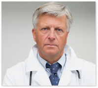

Специалисты
Терапевт

Александров
Алексей Алексеевич
Алексей Алексеевич
Врач высшей категории
стаж 35 лет
Занимается профилактикой, диагностикой и лечением:
- ОРВИ
- трахеита
- бронхита
- пневмонии
- гастрита
- панкреатита
- дисбактериоза
- остеохондроза
- артрита
- артроза
- подагры
- артериальной гипертензии
Кардиолог
Иванов
Иван Иванович
Иван Иванович
Врач первой категории
стаж 12 лет
В компетенции врача находится лечение следующих болезней:
- ишемической болезни сердца
- артериальной гипертензии
- дислипидемий
- дислипидемий
- дислипидемий
- дискинезии желчевыводящих путей
- гастритов
- холециститов
- бронхитов
- бронхиальной астмы
- пневмоний
Эндокринолог
Смирнова
Наталья Викторовна
Наталья Викторовна
Врач высшей категории
стаж 24 года
Специализируется на лечении заболеваний органов эндокринной системы, таких как:
- гипотиреоз
- сахарный и несахарный диабет
- зоб (диффузный, узловой, кистозный)
- ожирение
- остеопороз
- тиреоидит
- нарушение метаболизма кальция
- метаболический синдром
Офтальмолог
Соколова
Валерия Дмитриевна
Валерия Дмитриевна
Врач высшей категории
стаж 25 лет
Специализируется на консервативном лечении глазных болезней, среди которых:
- деструкция стекловидного тела
- иридоциклит
- блефарит
- ячмень
- конъюнктивит
- владеет всеми методами современной аппаратной диагностики органов зрения
Cтоматолог
Малышева
Майя Богдановна
Майя Богдановна
Врач первой категории
стаж 12 лет
- Специализируется в области диагностики, профилактики и лечения различных заболеваний зубов и полости рта.
- Обладает навыками проведения диагностики на современном оборудовании и профессиональной чистки полости рта (Air Flow), процедур отбеливания и эстетической реставрации зубов.
Уролог
Суханов
Илья Дмитриевич
Илья Дмитриевич
Врач высшей категории
стаж 24 года
Заболевания мочевыводящих путей и половой сферы, в том числе:
- цистита
- гломерулонефрита
- мочекаменной болезни
- уретрита
- баланопостита
- пиелонефрита
- почечной недостаточности
- дисплазии мочевого пузыря
- аденомы простаты
- энуреза
- нейрогенного мочевого пузыря
Гинеколог

Котова
Вероника Артёмовна
Вероника Артёмовна
Врач первой категории
стаж 11 лет
- Диагностика и лечение воспалительных заболеваний органов малого таза, доброкачественных заболеваний шейки матки, лечение ЗППП, нарушений менструального цикла, подбор контрацепции и заместительной гормонотерапии, лечение климактерических расстройств.
- Подбирает виды контрацепции, курирует подготовку к беременности.
- Ведет беременность.
Отоларинголог
Виноградова
Алина Егоровна
Алина Егоровна
Врач первой категории
стаж 15 лет
- Лечение отитов, синуситов, ринитов, аденоидитов, ларингитов, ангин.
- Промывание лакун миндалин, носоглотки, перемещения по Пройду, Зандерману.
- Проведение тимпанометрии, импедансометрии, аудиограммы, эндоскопии носоглотки.
Медсестра
Александрова
Елизавета Алиевна
Елизавета Алиевна
Врач высшей категории
стаж 5 лет
- Забора крови из вены и артерии, постановки внутривенных инъекций и катетеров
Врач-УЗД
Полякова
Каролина Богдановна
Каролина Богдановна
Врач первой категории
стаж 10 лет
Проводит УЗ-исследования следующих органов и зон:
- брюшной полости и забрюшинного пространства
- щитовидной
- молочных желёз
- лимфатических узлов
- слюнных желёз и мягких тканей и органов мошонки
- предстательной железы
- органов малого таза у женщин